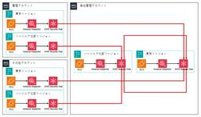
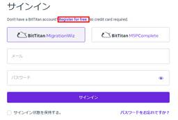
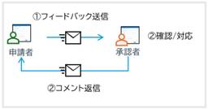

JBS Tech Blog
https://blog.jbs.co.jp/
JBS Tech Blogは、日本ビジネスシステムズ（JBS）の社員が分担して執筆を担当し、技術情報を発信しているブログです！
フィード

マルチアカウント・マルチリージョンにおけるAmazon Inspectorの集約 1
1
JBS Tech Blog
Amazon Inspectorは、EC2インスタンスやECRコンテナイメージ、Lambda関数を対象に、ソフトウェアの脆弱性や意図しないネットワーク露出の自動検出を行うAWSのサービスです。 今回は、マルチアカウントかつマルチリージョン環境で利用されるAmazon Inspectorにおける検出結果の集約方法について紹介します。 本記事では、以下サービス名は次のように記載いたします。 Amazon Inspector：Inpsector AWS Security Hub：Security Hub AWS Organizations：Organizations 検出結果の集約とAWS Secu…
8日前

MigrationWizのテナント作成手順 1
JBS Tech Blog
Google WorkspaceからMicrosoft 365へのデータ移行を、BitTitanのSaaS 型のデータ移行ツールであるMigrationWizで行う機会がありました。 MigrationWizを利用する際、まず最初にアカウントを作成する必要があります。アカウントを作成することで、テナントを作成することができます。 本記事では、テナント作成手順についてご紹介します。 アカウント作成 パスワード設定 ログイン おわりに アカウント作成 以下のURLを開く。 https://www.bittitan.com/account/login 以下の画面で「Register for free…
8日前

AvePoint Cloud Governance（ACG）を利用した申請フローの利活用提案 1
JBS Tech Blog
AvePoint Cloud Governance（以下、ACG）を導入済みのお客さまで、ワークフローの利活用に課題を感じている方はいませんか？ チームやサイトのガバナンス強化のワークフロー整備が一段落して以降、新規ワークフローの作成検討をしていないのはもったいないと感じます。 申請者がサービス申請をし、承認者に通知が飛び判断を行うフローの特性を活かし、独自の申請をカスタマイズすることができます。 Microsoft 365ライセンスだけで利用できるMicrosoft FormsやPower Automateを併用して同じようなシステムを作ることもできますが、時間と労力がかかります。 ACGの…
8日前

【Google サイト】組織内のユーザーにウェブサイトを公開する方法
JBS Tech Blog
今回は、Google サイトを用いてウェブサイトを作成し、組織内のユーザーに対して公開する方法を解説します。 Google サイトとは サイトの公開手順 前提条件 サイトを新規作成 サイトの公開対象を選択 サイトを公開 サイトのURLを変更 おわりに Google サイトとは Google サイトは、テキストや画像、動画などのファイルを埋め込むだけでウェブサイトが構築できるサービスです。 クリックとドラッグ&ドロップで作成、編集が可能です。 サイトの公開手順 前提条件 Google サイトを用いてサイトを作成するためには、作成者となるユーザーに対してGoogle 管理コンソール（https:/…
8日前
【Microsoft×生成AI連載】SharePoint agents を使ってみた
JBS Tech Blog
【Microsoft×生成AI連載】酒巻です。今回は SharePoint Agentsを使用してみました。 ※この記事の情報は12/19時点のものです。 これまでの連載 SharePoint agentsの紹介 既定のエージェント エージェントの作成 エージェントの作成 エージェントの編集 Teamsで使用する 利用シーンとメリット、注意点 利用シーン メリット 注意点 まとめ おまけ(BizChatによる本記事の要約 これまでの連載 これまでの連載記事一覧はこちらの記事にまとめておりますので、過去の連載を確認されたい方はこちらの記事をご参照ください。 blog.jbs.co.jp Shar…
8日前
AvePoint Cloud Governance（ACG）を利用したTeamsやSharePoint Online(SPO)のガバナンス強化提案
JBS Tech Blog
TeamsやSharePoint Online(SPO)の運用管理に課題がありませんか？ AvePoint Cloud Governance（以下、ACG）を利用することで課題解決できるかもしれません。 ACGとは、AvePointが提供している製品の1つです。 今回は、ACGの導入で解決できる課題、概要説明、JBSの提供サービスについて記事にします。 ACGの導入で解決できる課題 ACGの概要説明 サービス提供内容 ロール別の機能紹介 サービス管理者 申請者 承認者 責任者（棚卸担当者） おわりに 【PR】JBS提供サービス ACGの導入で解決できる課題 以下があります。 運用に必要なワーク…
9日前
【Power Apps】マネージドソリューションとアンマネージドソリューションの違い、使い分け
JBS Tech Blog
Power Appsのマネージドソリューションとアンマネージドソリューションの違いや使い分けについて説明しています。
9日前
【Tips】Teamsのプロフィール画像の組織外ユーザーからの見え方
JBS Tech Blog
Teamsのプロフィール画像にお気に入りの画像を設定したいと思った時に、「組織外ユーザーとのWeb会議等で見えてしまうと困る」と考え、設定をやめてしまった経験はないでしょうか。本記事では、Teamsのプロフィール画像の組織外ユーザーからの見え方についてご紹介します！
9日前
VSCode拡張機能 Dev Containers でTerraform実行環境構築
JBS Tech Blog
VSCode の拡張機能 Dev Containers を使ったMicrosoft Azure向けのTerraform実行環境の構築方法について、紹介します。
9日前
【Outlook】ナビゲーションバーを変更してその他アプリを起動できないようにする
JBS Tech Blog
Outlookのナビゲーションバーを変更して、Outlook上からその他アプリを起動させないようにする方法の紹介です。
10日前
【Microsoft×生成AI連載】【最新情報】Microsoft Ignite 2024で発表されたCopilot Pagesについて
JBS Tech Blog
ビジネスチャットを効率化するCopilot Pagesを深掘り。チームコラボレーションを次のレベルへ導く新機能を紹介します。
10日前
Kiwi Syslog Serverの概要
JBS Tech Blog
不正アクセスや障害発生などの様々な脅威からシステムを守るためには、セキュリティインシデントの早期発見を行い、システムを安定稼働させることがとても大切になります。 そこで導入されるサービスの1つとして、Syslogサーバーが挙げられます。 Syslogサーバーの導入により、様々なシステムのログを一元管理できるため、企業ではネットワーク全体の監視などに用いられることが多くあります。 本記事では、Windows専用のSyslogサーバーである「Kiwi Syslog Server」について紹介します。 Syslogとは Kiwi Syslog Serverの概要 Kiwi Syslog Server…
11日前
【OpenManage Enterprise】オフラインバージョンアップデートの方法（Windows ServerでのNFS共有編）
JBS Tech Blog
OpenManage Enterprise（以降OME）とは、Dell Technologiesより提供される1対多のシステム管理用/モニタリング用Webアプリケーション製品です。 OMEのソフトウェアバージョンは、新しいバージョンが出ている場合アップデートすることが可能です。 インターネット接続が可能な環境であればオンラインアップデートにて対応できますが、インターネット接続が不可の場合は、いくつか下準備をしたうえでオフラインアップデートの手順で対応が必要となります。 オフラインアップデートの手順としては、Windows ServerでのNFS共有を利用した方法、LinuxサーバーでのNFS共…
11日前
Microsoft Entraのエンタイトルメント管理
JBS Tech Blog
Microsoft Entraのエンタイトルメント管理を使うと、アクセス要求ワークフロー、アクセス割り当て、レビューおよび期限切れ処理を自動化し、IDとアクセスのライフサイクルを大規模に管理することができます。 エンタイトルメント管理を利用することで、複数のステージ承認により、アプリケーション、グループ、などのアクセス権を取得できるかを制御し、期間限定の割り当てと繰り返しのアクセスレビューを使用して、ユーザーがアクセス権を無期限に保持できないように棚卸しすることができます。 また、グループ、アプリケーション、SharePointサイトへのアクセスを、内部ユーザーだけでなく、リソースのアクセスを…
12日前
【入門】タスクスケジューラーをschtasksコマンドで設定する
JBS Tech Blog
こんにちは！今回は、スクリプトの定期実行やリマインドしたいメッセージの表示などで便利な、schtasksコマンドを使用してタスクを作成する方法についてまとめました。 schtasksとは 利用可能なパラメーター 必須のパラメーター オプションのパラメーター まとめ schtasksとは schtasksコマンドは、コマンドプロンプトもしくはPowerShellを使用して、タスクスケジューラーのタスクをコマンド設定する時に使います。 本記事ではコマンドプロンプトを使って設定していきます。コマンドプロンプトを起動し、以下のようにコマンドを入力します。 下記に、コードのテキストを用意しました。 sc…
12日前
AWS DataSyncを使ってAmazon S3のログを移行させてみた。#1準備編
JBS Tech Blog
VMware Aria Operations (SaaS)のサービス終了に伴い、仮想マシンやオンプレミスに置いているログをどう移行しようか、悩まれている方も多いと思います。一つの手段として、AWS DataSyncを使ってみるのはいかがでしょうか。 この記事では、AWSのデータ移行サービスであるAWS DataSyncのサービス紹介と実際に使用して、データ移行させるためにどのようにすればよいか、などを記載していければと思います。 AWS DataSyncとは? オンプレミスからのデータ移行にDataSyncが用いられる理由 準備 移行元、移行先のアカウントへのS3バケットの作成 移行先のポリシ…
15日前
【Microsoft×生成AI連載】【Outlook】Microsoft Outlook Copilotを使ってみた
JBS Tech Blog
【Microsoft×生成AI連載】シリーズの記事です。 本記事ではメールの送受信や予定・会議などをセットするときに使う「Microsoft Outlook」（以下、Outlook）で利用可能なCopilotの機能についてご紹介します。 これまでの連載 OutlookのCopilot紹介 Copilotを用いたメール返信文の自動生成 Copilotが提示するプロンプトを使用する場合 自身でプロンプトを設定する場合 Copilotを用いた会議依頼の自動設定 利用シーンとメリット、注意点 利用シーン メール返信文の自動生成 会議依頼の自動設定 メリット 注意点 参考情報 まとめ おまけ(BizCh…
15日前
Azure Cognitive Servicesを使って画像認識させてみた：Linux編
JBS Tech Blog
Azure Cognitive Servicesを使って画像認識させてみた。AIの力を借りることで、画像の内容を瞬時に理解し、分析することが可能になります。
16日前
ファイル回復スクリプトで LVM パーティションがマウントできない事象の原因と対処方法
JBS Tech Blog
AzureのLinux VMでバックアップからのファイル回復時にLVMのマウント問題を解決するための詳細ガイド。VG名やUUIDの重複対策を紹介します。
16日前
Azureで仮想マシンの監視と検知をする Part.1 概要編
JBS Tech Blog
システムにおける迅速な異常検知を実現するAzureのLog Analyticsの概要から導入ステップまで詳述します。
17日前
【Microsoft×生成AI連載】【Excel】Excel の Copilot で条件付き書式を使用する
JBS Tech Blog
本記事ではExcelのCopilotを使った条件付き書式について紹介します。プロンプトで直感的に設定できるため条件付き書式利用のハードルがぐっと下がる機能だと思います。
17日前
WindowsでのAWS CLIのインストールおよびアクセスキー設定方法について
JBS Tech Blog
本記事では、AWS CLIのアクセスキー設定で必要となる、IAMユーザーでのアクセスキー作成およびAWS CLIのインストール方法と、AWS CLIのアクセスキー設定についてご紹介します。 前提条件 IAMユーザーのアクセスキー作成 AWS CLIのインストール AWS CLIのインストール確認 AWS CLIのアクセスキー設定 AWS CLIのコマンド実行確認 まとめ 前提条件 本手順を開始する前に、以下の要件を満たしていることを確認してください。 IAMユーザーが作成済みであること ログインしているIAMユーザーがアクセスキーの作成権限を有していること AWS CLIインストール時にOSユ…
18日前
Azure AI Searchの削除時に「manually delete the SPL resource」のメッセージが出てリソースが削除できない場合の確認ポイント
JBS Tech Blog
検証で利用したAzure AI Searchが削除出来ない際の「manually delete the SPL resource」というエラーの原因特定に苦戦したので、備忘録としてまとめました。
18日前
Azure FunctionsでOffice系ファイルを処理するエンドポイントを作成する
JBS Tech Blog
本ガイドでは、Azure Functionsを用いてPowerPoint（PPTX）ファイルをPDF形式に変換するプロセスを詳細に説明します。本手法では、オープンソースソフトウェアであるLibreOfficeをDockerイメージに導入し、サーバレスアーキテクチャ上で効率的にファイル変換を行います。
19日前
Semantic Kernel Agent Frameworkでマルチエージェントを構築する(2/2)：マルチエージェントの構築
JBS Tech Blog
Senamtic Kernelを使い、マルチエージェントの開発を行ったので構築方法に関して記載します。今回は、前回の記事で構築したSemantic kernelのプラグインをもとに、Semantic Kernel Agent Frameworkを利用しマルチエージェント構築します。それぞれのエージェントは特定の役割に特化したエージェントとして作成していきます。※Semantic Kernel Agent Frameworkは現在試験段階であるため、内容が変更される可能性がありますので、最新のドキュメント等をご確認ください。 Semantic Kernel Agent Framework Age…
19日前